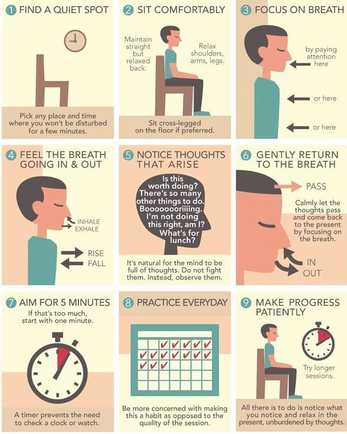
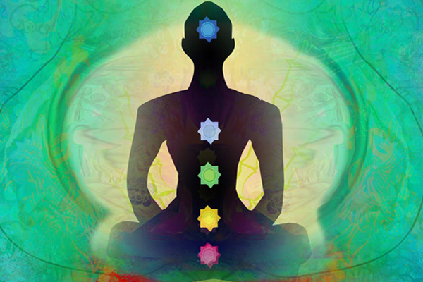
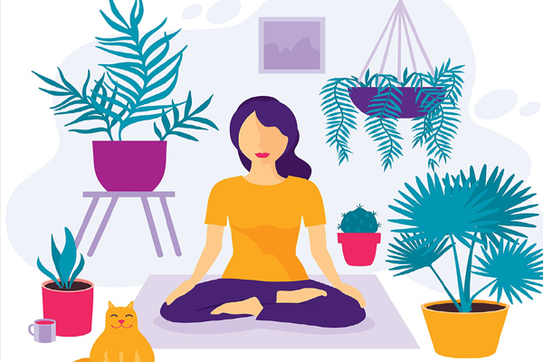
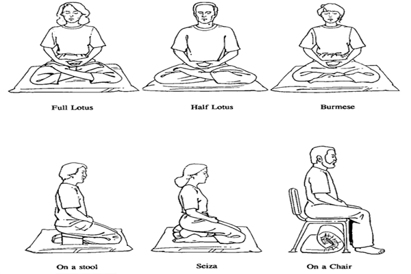
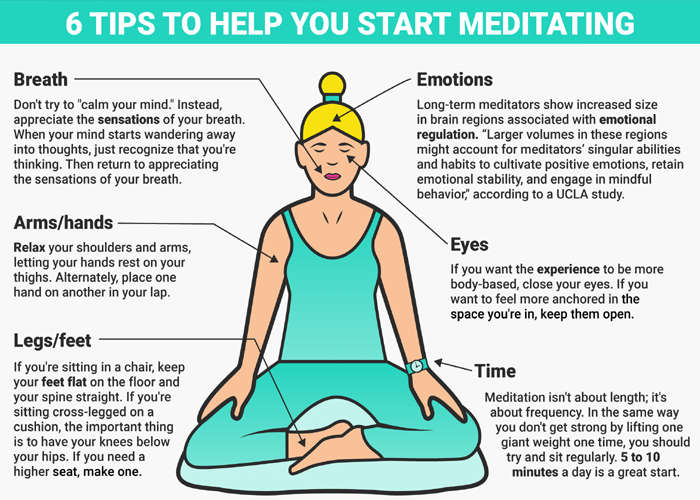
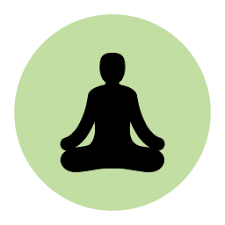
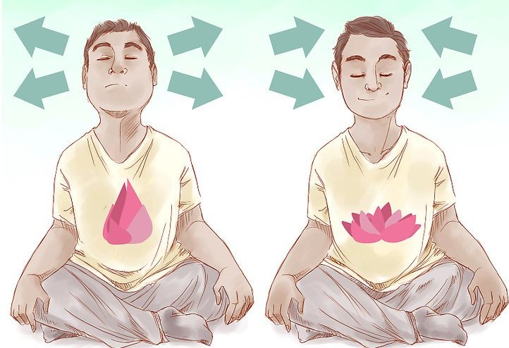
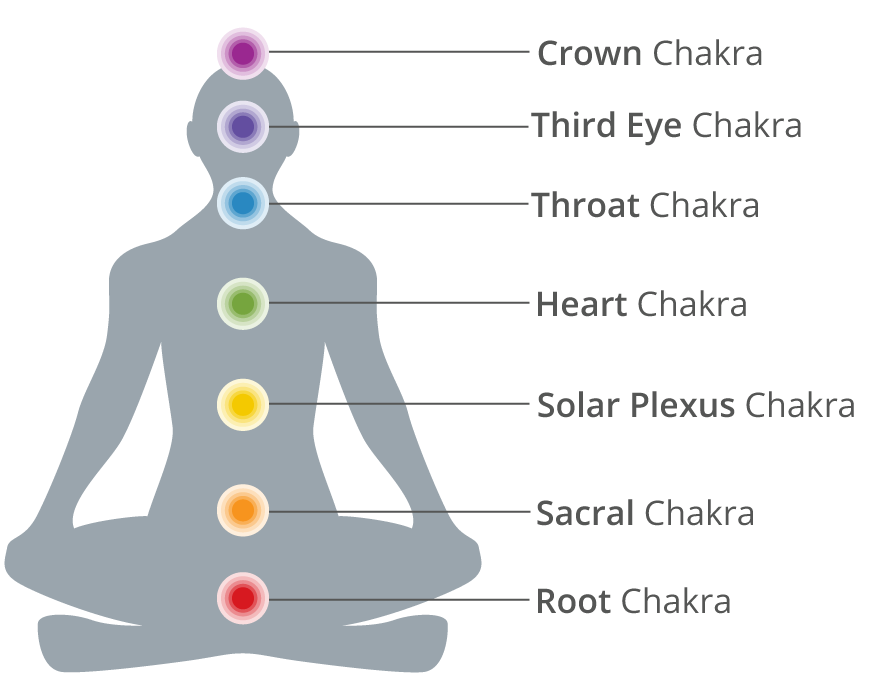
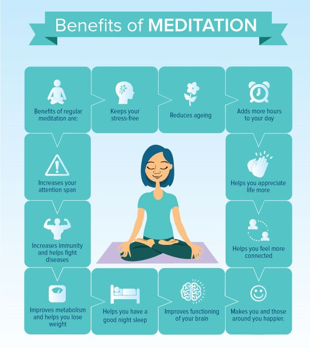

Buddhist meditation gives us time to slow down and wake up. Learn how to meditate with plain language instructions and advice..
 diam nonumy eirmodWhether youre trying meditation for the first time or just want a refresher, you canot go wrong with this easy to follow meditation.
Find a quiet and uplifted place where you can do your meditation practice.When starting out, see if you can allow 5 minutes for the practice, and increase that amount over time.
Breath meditation is a vital practice in itself, but it also represents the very foundation of all of Buddhist meditations varied forms. We will get to some of these shortly.But first: you probably have some questions. So let its address them.
We meditate for reasons both practical and profound. Some say meditation is the process of mind seeing its own true nature. Chogyam Trungpa Rinpoche wrote that ”meditation is a means of working with oneself and the phenomenal world.” The Buddha taught meditation as an essential tool to achieve liberation from suffering. Additionally, we might meditate to specifically cultivate certain positive traits, like friendliness, steadiness, compassion, and joy.
Basic Buddhist meditation comes down to two fundamental practices: concentration and insight. These are also called mindfulness and awareness. Many of the terms you have likely heard shamatha, vipassana, zazen, vipashyana, mindfulness, awareness, calm abiding, insight, and so on are names for one or both of these practices.
Buddhist practice always starts with meditations that calm and concentrate the mind. What often follows is insight. With the stable, focused, and fully present mind you have developed in your mindfulness practice, you can begin to investigate the nature of reality.
Each Buddhist tradition has its own approach to meditation. Here are our most popular teachings from four different traditions. You can try them out and see what feels most appropriate for you.
it is perfectly fine to try different meditations, but it is a good idea to stick with one form for a little while before trying another, so that you can develop a better sense for how each meditation feels. 
As Buddhist teacher Joseph Goldstein has said about meditation, Something quite extraordinary can happen in even five minutes.
“ Something quite extraordinary can happen in even five minutes.”His colleague Sharon Salzberg concurs, explaining: ”Usually when people start sitting, we say that five minutes is enough. You donot have to think, I have got to sit here for six hours. You donot have to get into some pretzel like posture and suffer!” 
Longtime meditators might sit for 20 to 45 minutes at a time or even longer, but it is often said that the best practice is the one you can actually do. So start with a small, doable amount of time. You can always increase the length of your meditation later.
Breath meditation is the most well known form of Buddhist meditation, but it is not the only one. The Buddha taught that we should ideally be able to hold the mind of meditation whether standing, sitting, walking, or lying down. Even everyday events like eating an apple or taking a photo on your smartphone can be opportunities to flex our meditation muscles. Various types of meditation are designed to help you cultivate positive qualities.
Some other popular types of meditation are walking, running, metta, and tonglen. Here are some instructions for meditating in many different ways.
Feeling the weight of the world on your shoulders? Meditation is incredibly effective at reducing stress and anxiety. One study found that mindfulness and zen type meditations significantly reduce stress when practiced over a period of three months. Another study revealed that meditation literally reduces the density of brain tissue associated with anxiety and worrying.  If you want your stress levels to plummet, meditation may be the answer.
Want to fill your life with happiness and energy? Mindfulness meditation increases your psychological functioning and in the process improves your sense of well being. Yoga and tai chi have been found to do this also according to studies, they have significant therapeutic effects and increase quality of life when practiced regularly.
Feeling a little disconnected from those around you? Try compassion meditation. Lovingkindess meditation (sometimes called Metta) is a compassion based meditation that enhances brain areas associated with mental processing and empathy.It also increases your sense of social connectedness. Not a hugging person? You just might become one after trying metta!
Would you love to add razor edge focus to your life? Research shows thatmeditation improves cognition and increases your ability to perform tasks requiring focus.One study tested a variety of different meditation types, including Transcendental Meditation, Vipassana, Tibetan Buddhist Meditation, Sufi Meditation and Hindu Meditation, and found that they all improve focus by varying degrees. I used to think coffee was the best way to get focused now I just meditate.
